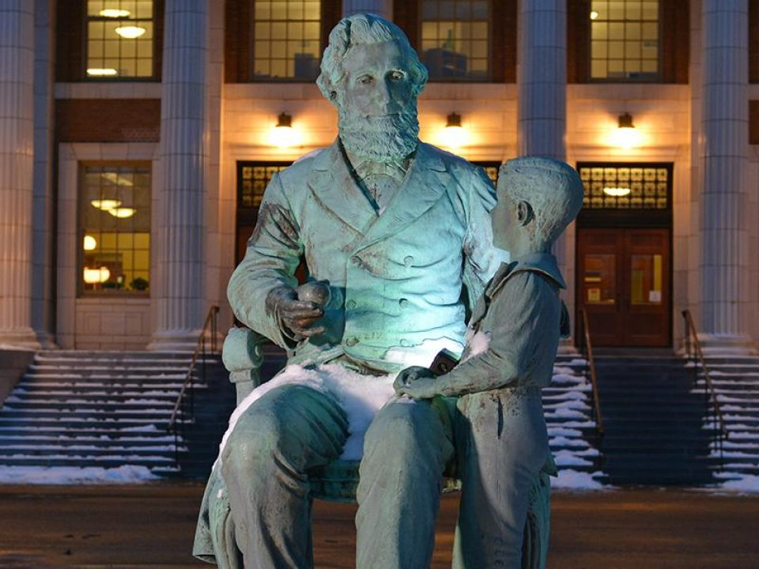
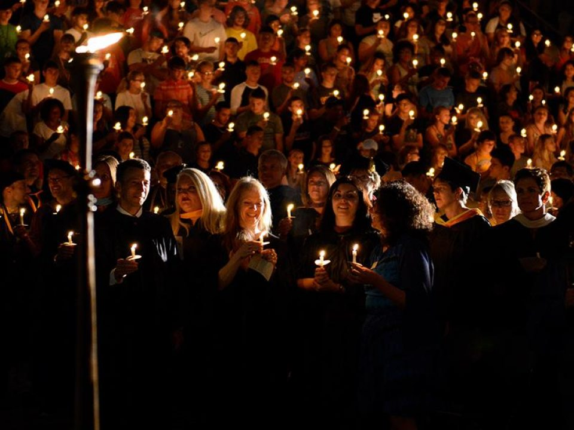
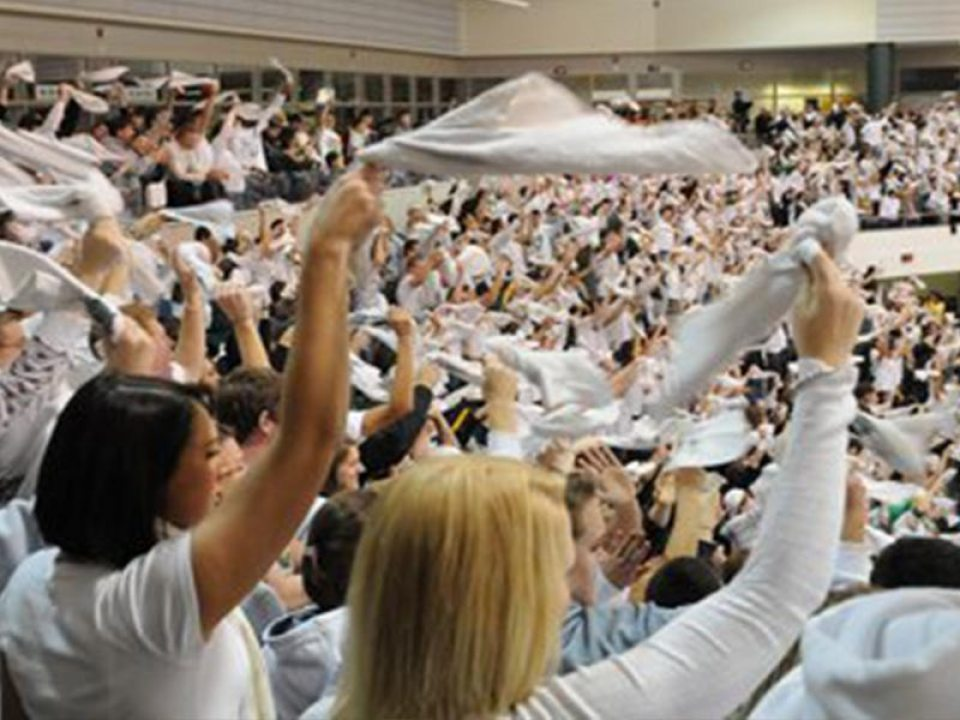
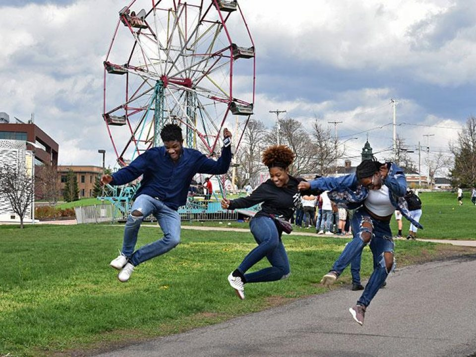
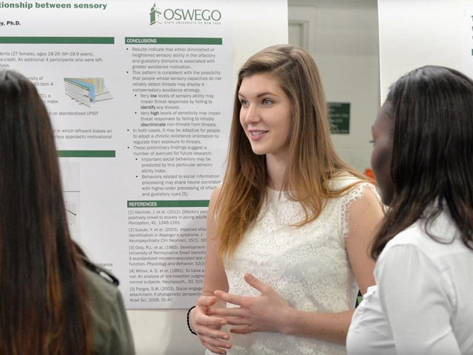
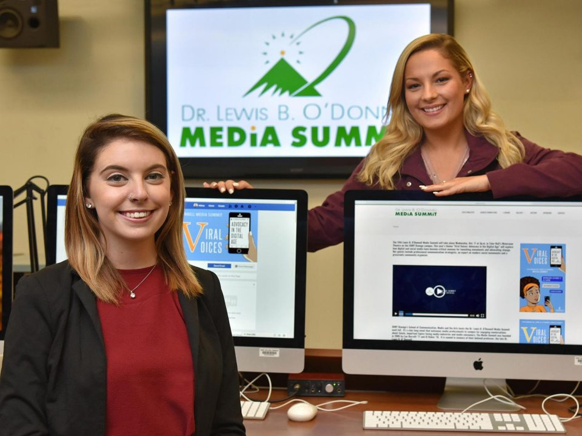

Edward Austin Sheldon founded this institution more than 160 years ago. His legacy underpins our identity and invigorates what we do. He built a powerful public asset to meet the broad needs of rising populations. He was an early adopter of object learning, a precursor to today’s inquiry-based learning, as a compelling pedagogy.

Our institution was founded in 1861 as the Oswego Primary Teachers’ Training School by Edward Austin Sheldon, who popularized some of the most innovative teaching methods of his day. Sheldon said his school was the first to combine the object learning method with in-class training for educators. Early Oswego graduates fanned across the nation and internationally to redesign and found countless colleges and schools. Today, the college continues to meet the evolving needs of employers and society in creating and adapting its broad selection of programs.

The August opening ceremony is a time-honored tradition during which alumni, faculty and staff pass on the Torch of Learning to incoming students. It’s their welcome as the newest members of the SUNY Oswego family. Torchlight festivities, hosted by Oswego’s orientation program, feature games, food and giveaways.

White-Out Weekend refers to the highly anticipated rivalry matchup between the Oswego hockey team (Lakers) and their archrivals from SUNY Plattsburgh — which Sports Illustrated once referred to as one of the best under-the-radar rivalries in college sports. Students will line up in the Marano Campus Center hours in advance of the game, and tickets usually sell out.

This new annual tradition unfolds on the last day of classes during the spring semester in May. Students enjoy carnival-like activities on campus to celebrate the conclusion of the academic year, and to relieve stress before finals week. The festival culminates with a concert held in the Marano Campus Center, featuring well known artists

This new annual tradition unfolds on the last day of classes during the spring semester in May. Students enjoy carnival-like activities on campus to celebrate the conclusion of the academic year, and to relieve stress before finals week. The festival culminates with a concert held in the Marano Campus Center, featuring well known artists

This new annual tradition unfolds on the last day of classes during the spring semester in May. Students enjoy carnival-like activities on campus to celebrate the conclusion of the academic year, and to relieve stress before finals week. The festival culminates with a concert held in the Marano Campus Center, featuring well known artists